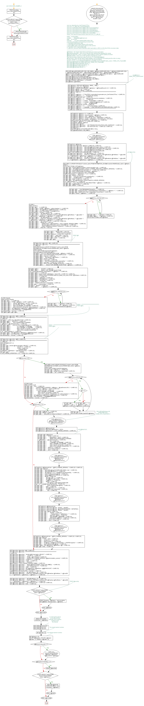

<a href="proc_GenTrackerCTProc2.png"></a>
-- use KenticoCMS_DataMArt_2 GO PRINT 'Executing proc_GenTrackerCTProc.sq;'; GO IF EXISTS (SELECT name FROM sys.procedures WHERE name = 'proc_GenTrackerCTProc') BEGIN DROP PROCEDURE proc_GenTrackerCTProc; END; GO -- exec sp_depends proc_GenTrackerCTProc --exec proc_CT_DIM_HFit_TrackerDailySteps -- exec proc_GenTrackerCTProc BASE_HFit_TrackerDailySteps -- exec proc_GenTrackerCTProc BASE_HFit_TrackerHbA1c ,1 -- exec proc_GenTrackerCTProc BASE_HFit_TrackerBodyFat,1 -- exec proc_GenTrackerCTProc BASE_HFit_TrackerCholesterol, 1 -- exec proc_GenTrackerCTProc BASE_HFit_TrackerBMI,1 -- Select * from sys.procedures where name like 'proc_CT_DIM_%' CREATE PROCEDURE proc_GenTrackerCTProc ( @TblName AS NVARCHAR (100) , @ShowGeneratedSQL AS INT = 0 , @GenJobToExecute AS INT = 0 , @AddAsJobStep AS INT = 1 , @UseCursor AS INT = 1) AS BEGIN /*-------------------------------------------------------------------------------------------------- Author: W.Dale Miller Contact: WDaleMiller@Gmail.com Date: 01.03.2016 Purpose: For each supplied table name, this procedure generates a "processing procedure" that: 1. Populates initial tracker data 2. Pulls data from the tracker tables on the servers 3. Syncs MART data on the tracker tables on the servers 4. Populates FACT_TrackerData data 5. calls proc_GenJobTrackerTableSync which generates a JOB to run the this SYNC procedure daily. */ /*------------------------------------------------------------------------------------------------------------------------------------------------------------------------ @TblName - the Tracker table that needs these procedures generated. @ShowGeneratedSQL - set to one to have the SQL selected and displayed for review. @GenJobToExecute - set to 1 to have a JOB created to run the Tracker update procedure @AddAsJobStep - set to one to NOT genrate a separate job, but to have this procedure added as a step to job job_CT_TrackerMergeMaster @UseCursor - there are two was to apply updates. One is using SET processing and the other is using a cursor. Set this to 1 to use a cursor and a 0 to use set processing. */ --SELECT column_name FROM INFORMATION_SCHEMA.columns WHERE table_name = 'BASE_HFit_TrackerBMI'; --DECLARE @TblName AS NVARCHAR (100) = 'BASE_HFit_TrackerBMI'; --DECLARE @ShowGeneratedSQL AS INT = 1; --DECLARE @GenJobToExecute AS INT = 0; --DECLARE @AddAsJobStep AS INT = 1; --DECLARE @UseCursor AS INT = 1; DECLARE @CurrDB NVARCHAR (100) = DB_NAME () , @tName NVARCHAR (100) = '' , @cName NVARCHAR (100) = '' , @pName NVARCHAR (100) = '' , @VerTblName NVARCHAR (100) = '' , @HDR NVARCHAR (MAX) = '' , @DOCS NVARCHAR (MAX) = '' , @procSql NVARCHAR (MAX) = '' , @S NVARCHAR (MAX) = '' , @S2 NVARCHAR (MAX) = '' , @COLS NVARCHAR (MAX) = '' , @MySql AS NVARCHAR (MAX) = ''; DECLARE @QryCOLS AS NVARCHAR (MAX) = ''; DECLARE @ReturnedCols AS NVARCHAR (MAX) = NULL; DECLARE @InstanceName AS NVARCHAR (50) = DB_NAME () ; SET @VerTblName = @TblName + '_CTVerHIST'; SET @tName = @TblName; --set @tName = 'BASE_HFit_TrackerCardio' ; SET @pName = REPLACE (@TblName , 'BASE_' , 'DIM_') ; SET @pName = 'proc_CT_' + @pName; SET @HDR = 'CREATE PROCEDURE ' + @pName + ' (@ReloadAll as int = 0) ' + CHAR (10) ; SET @HDR = @HDR + 'AS ' + CHAR (10) ; SET @HDR = @HDR + 'BEGIN ' + CHAR (10) ; SET @DOCS = @DOCS + '--*********************************************************************' + CHAR (10) ; SET @DOCS = @DOCS + '-- ** This PROC is generated by generator proc_GenTrackerCTProc.' + CHAR (10) ; SET @DOCS = @DOCS + '-- ** If changes are needed, please modify the generator and ' + CHAR (10) ; SET @DOCS = @DOCS + '-- ** regen ALL the procs for consistency. ' + CHAR (10) ; SET @DOCS = @DOCS + '-- ** ' + CHAR (10) ; SET @DOCS = @DOCS + '-- ** Author: W.Dale Miller' + CHAR (10) ; SET @DOCS = @DOCS + '-- ** Contact: wdalemiller@gmail.com' + CHAR (10) ; SET @DOCS = @DOCS + '-- ** Use: Set @ReloadAll = 1 to delete and reload ALL records' + CHAR (10) ; SET @DOCS = @DOCS + '-- ** for the this Tracker.' + CHAR (10) ; SET @DOCS = @DOCS + '-- ** GenDate: ' + CAST (GETDATE () AS NVARCHAR (50)) + CHAR (10) ; SET @DOCS = @DOCS + '--*********************************************************************' + CHAR (10) + CHAR (10) ; SET @DOCS = @DOCS + '/* ' + CHAR (10) ; SET @DOCS = @DOCS + 'drop procedure ' + @pName + CHAR (10) ; SET @DOCS = @DOCS + 'exec ' + @pName + CHAR (10) ; SET @DOCS = @DOCS + 'select top 100 * from ' + @TblName + CHAR (10) ; SET @DOCS = @DOCS + 'update ' + @TblName + ' set HashCode = ''NA'' where ItemID in (select top 100 ItemID from ' + @TblName + ') ' + CHAR (10) ; SET @DOCS = @DOCS + '*/' + CHAR (10) + CHAR (10) ; SET @HDR = @HDR + @DOCS; SET @procSql = @HDR; SET @procSql = @procSql + ' SET TRANSACTION ISOLATION LEVEL SNAPSHOT; ' + CHAR (10) ; SET @procSql = @procSql + ' SET NOCOUNT ON; ' + CHAR (10) + CHAR (10) ; SET @COLS = ''; DECLARE @RetCols AS NVARCHAR (MAX) = NULL; SET @InstanceName = DB_NAME () ; EXEC @COLS = proc_GenTableColumnsVariables @InstanceName , @TblName , @RetCols OUT; SET @COLS = @RetCols; SET @procSql = @procSql + @COLS + CHAR (10) + CHAR (10) ; SET @procSql = @procSql + ' DECLARE @MCnt AS bigint = NULL;' + CHAR (10) ; SET @procSql = @procSql + ' DECLARE @PerfAction AS NVARCHAR (10) = NULL;' + CHAR (10) ; SET @procSql = @procSql + ' DECLARE @NbrRecs AS BIGINT = 0;' + CHAR (10) ; SET @procSql = @procSql + ' DECLARE @RowGuid AS NVARCHAR (100) = CAST (NEWID () AS NVARCHAR (50)) ;' + CHAR (10) ; SET @procSql = @procSql + ' SET @PerfAction = ''N''; ' + CHAR (10) ; SET @procSql = @procSql + ' EXEC proc_PERFMON_PullTime_HIST @RowGuid, @PerfAction, ''' + @CurrDB + ''', ''' + @TblName + ''', @NbrRecs, ''' + @pName + '''' + CHAR (10) ; SET @procSql = @procSql + ' SET @PerfAction = ''IS''; ' + CHAR (10) ; SET @procSql = @procSql + ' EXEC proc_PERFMON_PullTime_HIST @RowGuid, @PerfAction, ''' + @CurrDB + ''', ''' + @TblName + ''', @NbrRecs, ''' + @pName + '''; ' + CHAR (10) ; --print @procSql ; DECLARE C CURSOR FOR SELECT column_name FROM INFORMATION_SCHEMA.columns WHERE table_name = @tName; OPEN C; FETCH NEXT FROM C INTO @cName; SET @S = @S + 'declare @synchronization_version as bigint = null ; ' + CHAR (10) ; SET @S = @S + ' SET @synchronization_version = CHANGE_TRACKING_CURRENT_VERSION(); ' + CHAR (10) ; SET @S = @S + 'declare @LastVersion as bigint = 0 ; ' + CHAR (10) + CHAR (10) ; SET @S = @S + 'EXEC PrintImmediate ''Processing ' + @pName + ' '' '; SET @S = @S + 'if (select count(*) from FACT_TrackerData WHERE TrackerName = ''' + @TblName + ''') = 0 ' + CHAR (10) ; SET @S = @S + 'BEGIN ' + CHAR (10) ; SET @S = @S + ' Print ''Zero records found, reloading ALL.'' ; ' + CHAR (10) ; SET @S = @S + ' set @ReloadAll = 1 ; ' + CHAR (10) ; SET @S = @S + 'END' + CHAR (10) + CHAR (10) ; SET @S = @S + ' SET @LastVersion = (Select max(SYS_CHANGE_VERSION) from ' + @VerTblName + ') ; ' + CHAR (10) ; SET @S = @S + '-- PULL AND INSERT ALL RECORDS FROM: ' + @tName + + CHAR (10) ; SET @S = @S + 'If @ReloadAll = 1 ' + CHAR (10) ; SET @S = @S + 'BEGIN ' + CHAR (10) ; SET @S = @S + ' Print ''BEGINNING Reload ALL.'' ; ' + CHAR (10) ; SET @S = @S + 'Delete from FACT_TrackerData where TrackerName = ''' + @tName + ''' ; ' + CHAR (10) ; SET @S = @S + 'INSERT INTO FACT_TrackerData (TrackerName' + CHAR (10) ; SET @S2 = 'Select ''' + @tName + '''' + CHAR (10) ; WHILE @@FETCH_STATUS = 0 BEGIN SET @S = @S + ' ,' + @cName + CHAR (10) ; SET @S2 = @S2 + ' ,' + @cName + CHAR (10) ; FETCH NEXT FROM C INTO @cName; END; CLOSE C; DEALLOCATE C; SET @S = @S + ' )' + CHAR (10) ; SET @S2 = @S2 + ' FROM ' + @tName + ' option (maxdop 1) ;' + CHAR (10) ; SET @S2 = @S2 + ' SET @NbrRecs = @@ROWCOUNT;' + CHAR (10) ; SET @S2 = @S2 + ' print ''RELOADED: '' + cast(@NbrRecs as nvarchar(50)) + '' records.'';' + CHAR (10) ; SET @S2 = @S2 + ' SET @PerfAction = ''IE''; ' + CHAR (10) ; SET @S2 = @S2 + ' EXEC proc_PERFMON_PullTime_HIST @RowGuid, @PerfAction, ''' + @CurrDB + ''', ''' + @TblName + ''', @NbrRecs, ''' + @pName + '''; ' + CHAR (10) ; SET @S2 = @S2 + ' SET @PerfAction = ''T''; ' + CHAR (10) ; SET @S2 = @S2 + ' EXEC proc_PERFMON_PullTime_HIST @RowGuid, @PerfAction, ''' + @CurrDB + ''', ''' + @TblName + ''', @NbrRecs, ''' + @pName + '''; ' + CHAR (10) ; SET @S2 = @S2 + ' SET NOCOUNT OFF; ' + CHAR (10) + CHAR (10) ; SET @S2 = @S2 + ' BEGIN TRY ' + char (10) ; SET @S2 = @S2 + ' INSERT INTO ' + @VerTblName + ' (SYS_CHANGE_VERSION, DBMS) ' + CHAR (10) ; SET @S2 = @S2 + ' VALUES (@synchronization_version, DB_NAME ()) ; ' + CHAR (10) ; SET @S2 = @S2 + ' PRINT ''Registered Current CT Version id''; ' + CHAR (10) + CHAR (10) ; SET @S2 = @S2 + ' END TRY ' + char (10) ; SET @S2 = @S2 + ' BEGIN Catch ' + char (10) ; SET @S2 = @S2 + ' PRINT ''Current CT Version id currently registered''; ' + CHAR (10) + CHAR (10) ; SET @S2 = @S2 + ' END Catch ' + char (10) ; SET @S2 = @S2 + ' RETURN 1; ' + CHAR (10) ; SET @S2 = @S2 + 'END ; ' + CHAR (10) ; SET @S = @S + @S2; --PRINT @S; SET @procSql = @procSql + @S + CHAR (10) ; SET @procSql = @procSql + '--***************************************************************' + CHAR (10) ; --*************************************************************** DECLARE CInserts CURSOR FOR SELECT column_name FROM INFORMATION_SCHEMA.columns WHERE table_name = @tName; OPEN CInserts; FETCH NEXT FROM CInserts INTO @cName; DECLARE @S0 AS NVARCHAR (MAX) = ''; SET @S0 = '-- PULL ALL NEW RECORDS FROM: ' + @tName + CHAR (10) ; SET @S0 = @S0 + 'exec PrintImmediate ''Pulling NEW records.'' ; ' + CHAR (10) ; SET @S0 = @S0 + 'begin try' + CHAR (10) ; SET @S0 = @S0 + ' drop table #' + @TblName + ';' + CHAR (10) ; SET @S0 = @S0 + 'end try' + CHAR (10) ; SET @S0 = @S0 + 'begin catch' + CHAR (10) ; SET @S0 = @S0 + ' print ''Dropped temp table, proceeding.'' ; ' + CHAR (10) ; SET @S0 = @S0 + 'end catch ;' + CHAR (10) + CHAR (10) ; SET @S0 = @S0 + 'WITH CTE (SVR, DBNAME, ItemID) AS ( ' + CHAR (10) ; SET @S0 = @S0 + ' SELECT SVR, DBNAME, ItemID FROM ' + @tName + ' ' + CHAR (10) ; SET @S0 = @S0 + ' EXCEPT ' + CHAR (10) ; SET @S0 = @S0 + ' SELECT SVR, DBNAME, ItemID FROM FACT_TrackerData WHERE TrackerName = ''' + @tName + '''' + CHAR (10) ; SET @S0 = @S0 + ') ' + CHAR (10) ; SET @S0 = @S0 + 'select * into #' + @TblName + ' from CTE ;' + CHAR (10) + CHAR (10) ; SET @S0 = @S0 + 'CREATE NONCLUSTERED INDEX [CI_BASE_cms_user ] ON #' + @TblName + CHAR (10) ; SET @S0 = @S0 + ' (' + CHAR (10) ; SET @S0 = @S0 + ' [SVR] ASC,' + CHAR (10) ; SET @S0 = @S0 + ' [DBNAME] ASC,' + CHAR (10) ; SET @S0 = @S0 + ' ItemID ASC' + CHAR (10) ; SET @S0 = @S0 + ' )' + CHAR (10) ; SET @S = ' INSERT INTO FACT_TrackerData ' + CHAR (10) ; SET @S = @S + ' (TrackerName ' + CHAR (10) ; SET @S2 = ' SELECT ' + CHAR (10) ; SET @S2 = @S2 + ' ''' + @tName + '''' + CHAR (10) ; WHILE @@FETCH_STATUS = 0 BEGIN SET @S = @S + ' ,' + @cName + CHAR (10) ; SET @S2 = @S2 + ' ,BT.' + @cName + CHAR (10) ; FETCH NEXT FROM CInserts INTO @cName; END; CLOSE CInserts; DEALLOCATE CInserts; SET @S = @S + ' )' + CHAR (10) ; SET @S2 = @S2 + ' FROM ' + @tName + ' as BT' + CHAR (10) ; SET @S2 = @S2 + ' JOIN #' + @TblName + ' as CTE ' + CHAR (10) ; SET @S2 = @S2 + ' ON CTE.SVR = BT.SVR ' + CHAR (10) ; SET @S2 = @S2 + ' AND CTE.DBNAME = BT.DBNAME ' + CHAR (10) ; SET @S2 = @S2 + ' AND CTE.ItemID = BT.ItemID option (maxdop 1) ;' + CHAR (10) ; SET @S2 = @S2 + ' SET @NbrRecs = @NbrRecs + @@ROWCOUNT;' + CHAR (10) ; SET @S2 = @S2 + ' print ''INSERTED: '' + cast(@NbrRecs as nvarchar(50)) + '' records.'';' + CHAR (10) ; SET @S0 = @S0 + @S + @S2; --PRINT '--************************************'; --PRINT @S0; SET @procSql = @procSql + @S0 + CHAR (10) ; SET @procSql = @procSql + '--***************************************************************' + CHAR (10) ; --************************************************************************************************************** SET @S0 = ' -- APPLY ALL DELETES IF ANY' + CHAR (10) ; SET @S0 = @S0 + ' DELETE FT ' + CHAR (10) ; SET @S0 = @S0 + ' from CHANGETABLE (CHANGES ' + @tName + ', @LastVersion) AS C ' + CHAR (10) ; SET @S0 = @S0 + ' inner join FACT_TrackerData as FT ' + CHAR (10) ; SET @S0 = @S0 + ' on C.DBNAME = FT.DBNAME ' + CHAR (10) ; SET @S0 = @S0 + ' and C.DBNAME = FT.DBNAME ' + CHAR (10) ; SET @S0 = @S0 + ' AND C.ItemID = FT.ItemID ' + CHAR (10) ; SET @S0 = @S0 + ' AND C.SYS_CHANGE_OPERATION = ''D'' option (maxdop 1) ' + CHAR (10) ; SET @S0 = @S0 + ' SET @NbrRecs = @NbrRecs + @@ROWCOUNT;' + CHAR (10) ; SET @S0 = @S0 + ' print ''DELETED: '' + cast(@@ROWCOUNT as nvarchar(50)) + '' records.'';' + CHAR (10) ; --PRINT '--************************************'; --PRINT @S0; SET @procSql = @procSql + @S0 + CHAR (10) ; SET @procSql = @procSql + '--***************************************************************' + CHAR (10) ; --************************************************************************************************************** DECLARE @i AS INT = 0; SET @S = ''; SET @S = @S + 'declare @iChg as bigint = (SELECT ' + CHAR (10) ; SET @S = @S + ' COUNT (*) ' + CHAR (10) ; SET @S = @S + ' FROM ' + CHAR (10) ; SET @S = @S + ' CHANGETABLE (CHANGES ' + @TblName + ', @LastVersion) AS C ' + CHAR (10) ; SET @S = @S + ' WHERE C.SYS_CHANGE_OPERATION = ''U''); ' + CHAR (10) + CHAR (10) ; IF @UseCursor = 0 BEGIN DECLARE CUpdt CURSOR FOR SELECT column_name FROM INFORMATION_SCHEMA.columns WHERE table_name = @tName; OPEN CUpdt; FETCH NEXT FROM CUpdt INTO @cName; SET @S = @S + 'if @iChg > 0 ' + CHAR (10) ; SET @S = @S + 'update FACT_TrackerData' + CHAR (10) ; SET @S = @S + ' set ' + CHAR (10) ; WHILE @@FETCH_STATUS = 0 BEGIN IF @i = 0 BEGIN SET @S = @S + ' ' + @cName + ' = BT.' + @cName + CHAR (10) ; END; ELSE BEGIN SET @S = @S + ' ,' + @cName + ' = BT.' + @cName + CHAR (10) ; END; SET @i = @i + 1; FETCH NEXT FROM CUpdt INTO @cName; END; CLOSE CUpdt; DEALLOCATE CUpdt; SET @S = @S + ' from ' + CHAR (10) ; SET @S = @S + ' CHANGETABLE (CHANGES ' + @tName + ', @LastVersion) AS C ' + CHAR (10) ; SET @S = @S + ' inner join ' + @tName + ' as BT' + CHAR (10) ; SET @S = @S + ' on C.SVR = BT.SVR' + CHAR (10) ; SET @S = @S + ' AND C.DBNAME = BT.DBNAME ' + CHAR (10) ; SET @S = @S + ' AND C.ItemID = BT.ItemID' + CHAR (10) ; SET @S = @S + ' AND C.SYS_CHANGE_OPERATION = ''U'' option (maxdop 1) ' + CHAR (10) ; SET @S = @S + ' SET @NbrRecs = @NbrRecs + @@ROWCOUNT;' + CHAR (10) ; SET @S = @S + ' print ''UPDATED: '' + cast(@@ROWCOUNT as nvarchar(50)) + '' records.'';' + CHAR (10) ; END; IF @UseCursor = 1 BEGIN SET @S = @S + 'if @iChg > 0 ' + CHAR (10) ; SET @S = @S + 'BEGIN' + CHAR (10) ; SET @S = @S + ' DECLARE CC Cursor for SELECT ' + CHAR (10) ; --DECLARE @TblName AS NVARCHAR (50) = 'BASE_HFit_TrackerHbA1c'; EXEC @QryCOLS = proc_GetTableColumnsCT @InstanceName , @TblName , @ReturnedCols OUT; SET @QryCOLS = @ReturnedCols; SET @QryCOLS = REPLACE (@QryCOLS , '[' , 'BT.[') ; SET @QryCOLS = @QryCOLS + ', C.SYS_CHANGE_VERSION ' + CHAR (10) ; --print @QryCOLS ; SET @S = @S + @QryCOLS; SET @S = @S + ' FROM ' + CHAR (10) ; SET @S = @S + ' ' + @TblName + ' as BT ' + CHAR (10) ; SET @S = @S + ' INNER JOIN CHANGETABLE (CHANGES ' + @TblName + ' , @LastVersion) AS C ' + CHAR (10) ; SET @S = @S + ' ON ' + CHAR (10) ; SET @S = @S + ' C.DBNAME = BT.DBNAME ' + CHAR (10) ; SET @S = @S + ' AND C.DBNAME = BT.DBNAME ' + CHAR (10) ; SET @S = @S + ' AND C.ItemID = BT.ItemID ' + CHAR (10) ; SET @S = @S + ' AND C.SYS_CHANGE_OPERATION = ''U''; ' + CHAR (10) ; SET @S = @S + ' OPEN CC;' + CHAR (10) ; SET @S = @S + ' FETCH NEXT FROM CC ' + CHAR (10) ; SET @S = @S + ' INTO ' + CHAR (10) ; --************************************************************************************* EXEC @COLS = proc_GetTableColumnsAsVars @InstanceName , @TblName , 0 , @ReturnedCols OUT; --************************************************************************************* SET @COLS = @ReturnedCols + ', @SYS_CHANGE_VERSION; ' + CHAR (10) + CHAR (10) ; SET @S = @S + @COLS; SET @S = @S + ' DECLARE @msg AS NVARCHAR (2000) = null; ' + CHAR (10) ; SET @S = @S + ' DECLARE @II AS int = 0; ' + CHAR (10) ; SET @S = @S + ' SET @msg = ''1 of '' + cast(@iChg as nvarchar(50)); ' + CHAR (10) ; SET @S = @S + ' EXEC PrintImmediate @msg; ' + CHAR (10) ; SET @S = @S + ' WHILE @@FETCH_STATUS = 0' + CHAR (10) ; SET @S = @S + ' BEGIN ' + CHAR (10) ; SET @S = @S + ' SET @II = @II + 1; ' + CHAR (10) ; SET @S = @S + ' SET @MCnt = @II % 1000 ; ' + CHAR (10) ; SET @S = @S + ' IF @MCnt = 0 ' + CHAR (10) ; SET @S = @S + ' BEGIN ' + CHAR (10) ; SET @S = @S + ' SET @msg = CAST (@II AS NVARCHAR (50)) + '' of '' + cast(@iChg as nvarchar(50)) ' + CHAR (10) ; SET @S = @S + ' EXEC PrintImmediate @msg; ' + CHAR (10) ; SET @S = @S + ' END; ' + CHAR (10) ; SET @S = @S + ' SET @ACTION = ''U'' ; ' + CHAR (10) ; SET @S = @S + ' UPDATE Fact_TrackerData ' + CHAR (10) ; SET @S = @S + ' SET ' + CHAR (10) ; --************************************************************************************* EXEC @COLS = proc_GetTableColumnsAsVars @InstanceName , @TblName , 1 , @ReturnedCols OUT; --************************************************************************************* SET @COLS = @ReturnedCols; SET @COLS = REPLACE (@COLS , ',ItemID' , '--,ItemID') ; SET @COLS = REPLACE (@COLS , '@LASTMODIFIEDDATE' , 'GETDATE()') ; SET @COLS = REPLACE (@COLS , ',ItemID' , '--,ItemID') ; SET @S = @S + @cols + CHAR (10) ; SET @S = @S + ' WHERE ' + CHAR (10) ; SET @S = @S + ' TrackerName = ''' + @TblName + ''' ' + CHAR (10) ; SET @S = @S + ' AND SVR = @SVR ' + CHAR (10) ; SET @S = @S + ' AND DBNAME = @DBNAME ' + CHAR (10) ; SET @S = @S + ' AND ItemID = @Itemid; ' + CHAR (10) + CHAR (10) ; SET @S = @S + ' FETCH NEXT FROM CC ' + CHAR (10) ; SET @S = @S + ' INTO ' + CHAR (10) ; --************************************************************************************* EXEC @COLS = proc_GetTableColumnsAsVars @InstanceName , @TblName , 0 , @ReturnedCols OUT; --************************************************************************************* SET @COLS = @ReturnedCols + ', @SYS_CHANGE_VERSION; ' + CHAR (10) + CHAR (10) ; SET @S = @S + @COLS; SET @S = @S + ' END ; --while ' + CHAR (10) ; SET @S = @S + ' CLOSE CC; ' + CHAR (10) ; SET @S = @S + ' DEALLOCATE CC; ' + CHAR (10) ; SET @S = @S + ' set @msg = cast(@II as nvarchar(50)) + '' UPDATES applied.'' ;' + CHAR (10) ; SET @S = @S + ' exec PrintImmediate @msg ;' + CHAR (10) ; SET @S0 = @S0 + ' SET @NbrRecs = @NbrRecs + @II;' + CHAR (10) ; SET @S = @S + 'END ; ' + CHAR (10) ; END; SET @procSql = @procSql + @S + CHAR (10) ; SET @procSql = @procSql + '--***************************************************************' + CHAR (10) ; SET @procSql = @procSql + ' declare @iCnt as bigint = (SELECT ' + CHAR (10) ; SET @procSql = @procSql + ' COUNT (*) ' + CHAR (10) ; SET @procSql = @procSql + ' FROM ' + @VerTblName + CHAR (10) ; SET @procSql = @procSql + ' WHERE SYS_CHANGE_VERSION = @synchronization_version) ' + CHAR (10) ; SET @procSql = @procSql + ' IF @iCnt = 0 ' + CHAR (10) ; SET @procSql = @procSql + ' begin ' + CHAR (10) ; SET @procSql = @procSql + ' insert into ' + @VerTblName + ' (SYS_CHANGE_VERSION, DBMS) ' + CHAR (10) ; SET @procSql = @procSql + ' values (@synchronization_version, DB_NAME()) ; ' + CHAR (10) ; SET @procSql = @procSql + ' print ''Saved version id'' ; ' + CHAR (10) ; SET @procSql = @procSql + ' END ; ' + CHAR (10) ; SET @procSql = @procSql + ' SET @NbrRecs = @NbrRecs + @@ROWCOUNT;' + CHAR (10) ; SET @procSql = @procSql + ' print ''RELOADED: '' + cast(@NbrRecs as nvarchar(50)) + '' records.'';' + CHAR (10) ; SET @procSql = @procSql + ' SET @PerfAction = ''IE''; ' + CHAR (10) ; SET @procSql = @procSql + ' EXEC proc_PERFMON_PullTime_HIST @RowGuid, @PerfAction, ''' + @CurrDB + ''', ''' + @TblName + ''', @NbrRecs, ''' + @pName + '''; ' + CHAR (10) ; SET @procSql = @procSql + ' SET @PerfAction = ''T''; ' + CHAR (10) ; SET @procSql = @procSql + ' EXEC proc_PERFMON_PullTime_HIST @RowGuid, @PerfAction, ''' + @CurrDB + ''', ''' + @TblName + ''', @NbrRecs, ''' + @pName + '''; ' + CHAR (10) ; SET @procSql = @procSql + ' SET NOCOUNT OFF; ' + CHAR (10) + CHAR (10) ; SET @procSql = @procSql + 'END ; ' + CHAR (10) ; --PRINT @procSql; IF EXISTS (SELECT name FROM sys.procedures WHERE name = @pName) BEGIN PRINT 'Dropping ' + @pName + ' and recreating.'; SET @MySql = 'drop procedure ' + @pName; EXEC (@MySql) ; END; EXEC (@procSql) ; PRINT 'Successfully CREATED: ' + @pName; -- In order for the jobs to run at different time intervals, use a random number to set the interval. DECLARE @Random INT; DECLARE @Upper INT; DECLARE @Lower INT; SET @Lower = 0; ---- The lowest random number SET @Upper = 10; ---- The highest random number SELECT @Random = ROUND ( (@Upper - @Lower - 1) * RAND () + @Lower , 0) ; --*************************************************************************** IF @GenJobToExecute = 1 BEGIN EXEC proc_GenJobTrackerTableSync @Interval = @Random , @ProcName = @pName; END; --*************************************************************************** IF @ShowGeneratedSQL = 1 BEGIN SELECT @procSql; END; IF EXISTS (SELECT name FROM sys.procedures WHERE name = @pName) BEGIN DECLARE @pSql AS NVARCHAR (MAX) = 'drop procedure ' + @pName; EXEC (@pSql) ; END; EXEC (@procSql) ; END; GO PRINT 'Executed proc_GenTrackerCTProc.sq;'; GO
Hide code
Visustin flow chart for T-SQL